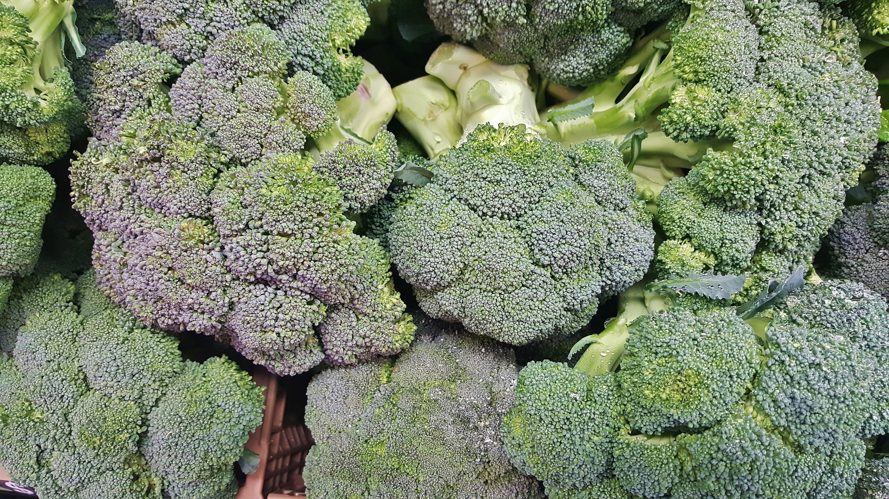

Amazing Health Benefit of Broccoli
Broccoli is a good source of fibre and protein, and contains iron, potassium, calcium, selenium and magnesium as well as the vitamins A, C, E, K and a good array of B vitamins including folic acid.